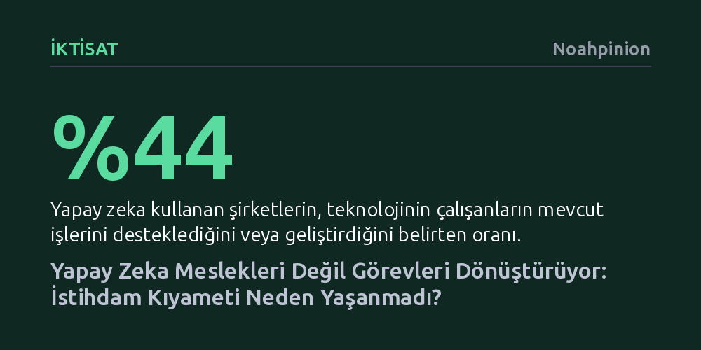

IKTISAT · Noahpinion · 2026-09-07
Yapay zekanın yayılması sanılanın aksine kitlesel iş kaybı yaratmıyor; şirket verileri teknolojinin istihdamı azaltmak yerine yeni görev alanları açtığını kanıtlıyor. Otomasyon mesleklerin bütününü değil yalnızca belirli görevleri devraldığından, çalışanlar kurumsal yapılar içinde vazgeçilmezliğini koruyor.
Yapay zekanın çalışanları gereksiz kılacağı korkusunun temelsiz olduğunu, teknolojinin meslekleri toptan silmek yerine görev bazlı dönüşümle insan emeğini daha kıymetli hale getirdiğini gösterir.

Büyük dil modelleri hayatımıza girdiğinde hem kamuoyunda hem de bizzat yapay zeka şirketlerinin söylemlerinde ortak bir kabul vardı: Milyonlarca insan çok yakında ekonomik olarak işlevsiz kalacaktı. Şirket yöneticileri modellerinin insan zekasını geride bırakacağını ve devasa işten çıkarmaların kapıda olduğunu neredeyse bir pazarlama vaadi gibi anlattı. Ancak aradan geçen yıllara, savaşlar ve gümrük tarifeleri gibi küresel ekonomiyi sarsan onca olumsuz gelişmeye rağmen emek piyasasında beklenen çöküş bir türlü gerçekleşmedi.
Bugün ABD iş gücü verilerine baktığımızda, yapay zekadan ilk ve en sert darbeyi alacağı iddia edilen yazılım mühendisliği gibi alanlarda bile çalışan oranının tarihi zirvelerine yakın seyrettiğini görüyoruz. Hatta yapay zekaya güvenip yazılımcı kadrolarını agresif şekilde küçülten kimi teknoloji devleri, kısa süre sonra aynı uzmanları çok daha yüksek maaşlarla yeniden işe almak zorunda kaldı. Karşımızda genel kanının tam tersini söyleyen inatçı bir gerçeklik var: İnsan emeği, yapay zeka çağında da değerini ve canlılığını korumayı sürdürüyor.
Toplumda otomasyon denince akla gelen ilk şey insanların yerini makinelerin almasıdır. Oysa iktisat teorisi ve teknoloji tarihi, otomasyonun üç temel etkisi olduğunu gösterir: İkame etme, verimlilik artışı sağlama ve en önemlisi yeni işler ile görevler yaratma. Sanayi Devrimi'nde mekanik dokuma tezgahları usta dokumacıları işinden etmişti, ancak bu makineleri işler kılacak on binlerce teknisyen ve mühendis kadrosuna kapı açtı. İnternet seyahat acentelerini neredeyse silerken, yerine milyonlarca web tasarımcısı ve dijital pazarlamacı koydu.
Daron Acemoglu gibi şüpheci iktisatçılar yapay zekanın yeni görevler yaratsa bile bunların dezenformasyon veya siber suç gibi topluma zarar veren "kötü görevler" olacağını öne sürüyordu. Oysa pratik bambaşka bir tablo ortaya koyuyor. Örneğin yazılımcılar artık sıfırdan kod yazmak yerine modelleri yönlendiriyor, üretilen kodu doğruluyor, güvenlik kontrollerini yapıyor ve mimari entegrasyonu sağlıyor. Yani teknoloji bir görevi hafifletirken, çalışanların önüne daha önce var olmayan yepyeni sorumluluklar ve üretim süreçleri çıkarıyor. Üstelik ürün çeşitliliğinin artması da yeni bir tüketici talebi yaratarak iş gücüne olan ihtiyacı canlı tutuyor.
ABD Sayım Bürosu'nun 2023'ten beri şirketlerle yaptığı düzenli anketler, yapay zekanın ofislerdeki gerçek etkisini çarpıcı biçimde gözler önüne seriyor. Ankete katılan işletmelerin büyük çoğunluğu çalışan sayısında bir değişiklik yaşanmadığını belirtirken, değişiklik bildirenler arasında personel sayısını artıranlar azaltanlardan daha fazla. Üstelik yapay zeka kullanan şirketlerin yüzde 44'ü bu teknolojinin personelin mevcut işini desteklediğini, yüzde 11'i daha önce kimsenin yapmadığı yepyeni görevler yarattığını, yalnızca yüzde 10'u bir çalışanın görevini tamamen devraldığını söylüyor. Benzer tablo gençlerin girdiği başlangıç seviyesi işler için de geçerli.
Bu tablonun ardındaki temel neden, meslekler ile görevler arasındaki ayrımdır. Geçmişte asansör operatörlüğü gibi tek bir mekanik düğmeye basmaktan ibaret olan basit meslekler teknolojiyle kolayca silindi. Ancak modern çağın meslekleri tek bir işlemden değil, birbirine geçmiş yüzlerce karmaşık ve esnek görevden oluşuyor. Tıpkı yıllar önce "radyologların sonu geldi" ya da "otonom sürüş kamyoncuları bitirecek" kehanetlerinin suya düşmesi gibi, karmaşık süreçleri yürüten meslekler yapay zekanın gelişmişliğine rağmen yerli yerinde duruyor. Kısacası kaynak metindeki tespitle ifade edersek, "görevleri ikame etmekle meslekleri ikame etmek aynı şey değil."
Hartley ve çalışma arkadaşlarının 2026 tarihli araştırması, yapay zeka çağının en ilginç psikolojik çelişkisini ortaya çıkarıyor: Bir çalışan gün içinde yapay zekayı ne kadar yoğun kullanıyorsa, işini kaybetme korkusu da o kadar tırmanıyor. İnsanlar modelin kendi yaptığı bir işi saniyeler içinde çözdüğünü gördükçe paniğe kapılıyor. Ne var ki araştırmacılar yapay zekaya maruz kalma düzeyi ile fiili işten çıkarmalar arasındaki korelasyonu incelediklerinde koca bir sıfırla karşılaştılar. Korku tavan yaparken gerçekte iş kaybı yaşanmıyordu.
Bu durum, insanların kendi değerlerini nasıl ürettiklerine dair derin bir kör noktaya işaret ediyor. Modern çalışanlar genellikle kurum içinde ürettikleri değeri basit birkaç görevin toplamı sanıyor; oysa her çalışan devasa ve karmaşık bir organizasyonel mekanizmanın stratejik bir parçasıdır. Yapay zeka rutin görevleri üstlendiğinde insan boşa çıkmıyor; aksine o kurumsal makine içinde daha önce zaman bulamadığı yüksek katma değerli işlere odaklanarak şirket için daha vazgeçilmez hale geliyor.
Peki bu denge sonsuza kadar böyle sürebilir mi? Yapay zekanın insanları bütünüyle işsiz bırakabilmesi için sadece komut alan pasif araçlar olmaktan çıkıp, kendi kararlarını verip uygulayan tam otonom "ajan" sistemlere dönüşmesi gerekir. Ancak bir yapay zeka sistemi ne kadar otonom ve bağımsız hareket ederse, insan perspektifinden bakıldığında hata yapma, raydan çıkma ve güvenilmez olma riski de o derece artar.
Bu teknik gerçeklik, insanın sistemdeki yerini garanti altına alan temel unsurdur. Yapay zeka ne kadar güçlenirse güçlensin, onun hedeflerini belirleyecek, kararlarını denetleyecek, yoldan çıktığında müdahale edecek ve sorumluluk alacak insan gözetmenlere her zaman ihtiyaç duyulacaktır. Kıyamet senaryoları popülerliğini korusa da, veriler yapay zekanın işlerimizi elimizden almayı inatla reddettiğini ve insan emeğinin yönlendirici bir merkez olarak kalmaya devam edeceğini gösteriyor.